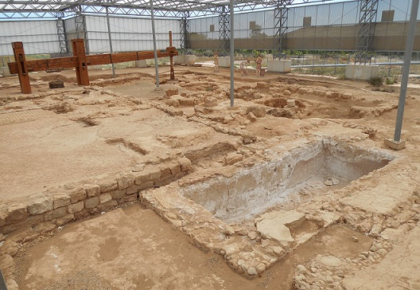
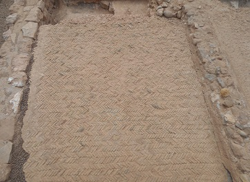

|
La villa romana de La
Loma del Regadío se localiza en la Comarca turolense del Bajo Martín, en
el término municipal de Urrea de Gaén.
La villa estuvo habitada desde finales del siglo III
hasta principios del siglo V.
La vivienda cuenta con la pars urbana decorada con mosaicos y pinturas
murales. Destaca el mosaico con el tema mítico de la lucha del héroe
Belerofonte contra la feroz bestia Quimera. Se conserva un lateral del
peristilo y el Oceus. También destaca la habitación donde se localiza el
sistema de calefacción.
Anexa a la zona residencial se localiza la pars rustica, dedicada al
cultivo del olivo y la vid. Destaca su torcularium con sus cinco
prensas de viga, sus dos molinos para la molienda de la oliva y sus
depósitos de captación con el reboco original. Es uno de los mejores
ejemplos de la villa rustica romana.
|
 |

No olvidemos los suelos de opus signinum y
spicatum.
|
|